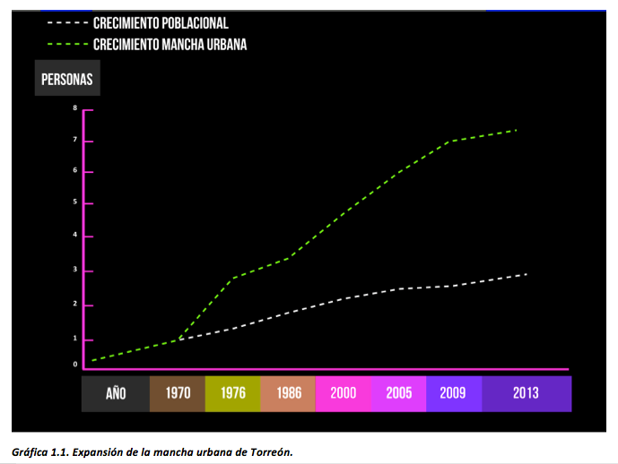
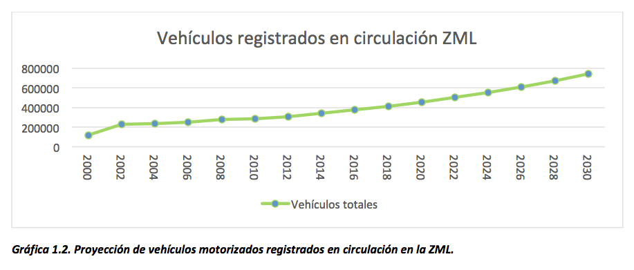

Movilidad y nuestra ciudad
Por Lic. Luis A. Gutiérrez Arizpe
25/11/2014
¿Qué es la movilidad?
El concepto de movilidad hace referencia a la capacidad que tienen las personas y las mercancías de moverse: dentro de las ciudades, como es el caso de la movilidad urbana que está delimitando la actividad hacia el interior y la movilidad suburbana haciendo referencia al flujo entre las agrupaciones de comunidades de menor tamaño con el gran centro urbano.
De igual manera las carreteras intermunicipales, las terminales de autobuses, los aeropuertos y estaciones de ferrocarriles son considerados en una escala mayor del concepto de movilidad, es decir, cuando nos referimos a la movilidad en un contexto más amplio que relaciona al centro urbano con otros a mayor distancia.
Podemos considerar tres modos de transporte para sintetizar el análisis del panorama:
a) El transporte privado: de uso personal, basado en que la decisión de la ruta a elegir para su desplazamiento depende directamente del usuario y podemos dividirlos en motorizado (automóvil particular) y no motorizado (bicicleta, viaje a pie).
b) Transporte público: su objetivo es satisfacer las necesidades de la población a gran escala, observando dos subtipos, los vehículos oficiales (al servicio de las entidades gubernamentales, sirviendo de manera indirecta a los intereses de la ciudadanía) y los colectivos, siendo este último un tema central debido al potencial con que cuenta para llevar a cabo una movilización eficiente de la población. El autobús o camión es el ejemplo más claro para la región, pero los sistemas de metro, metrobús, tren ligero, entre otros, entran en esta modalidad.
c) Transporte mercantil: es decir, los medios que son demandados principalmente por el sistema económico para satisfacer las necesidades de las actividades comerciales e industriales. Los camiones de carga pesada, los autobuses de transporte de personal, así como la actividad relacionada con el funcionamiento de las centrales de autobuses, los aeropuertos y las estaciones ferrocarrileras. Una subdivisión de esta modalidad son los vehículos que no circulan cotidianamente, son vehículos especializados para cumplir una labor específica como las grúas.
Cada uno de los modos se subdividen dependiendo de las características del medio. Motorizados, no motorizados, colectivos, particulares. Cada tipo tiene una utilidad específica aunque las funciones para las cuales fueron diseñadas esta diversidad de vehículos pueden alternar entre ellos. La necesidad del traslado, la distancia, el tiempo en que se debe de cubrir, la carga que se requiere movilizar son cuestiones que hacen de la elección del transporte a utilizar una decisión basada en la racionalidad, en la eficiencia, en el costo-beneficio. Pero también en la disponibilidad de alternativas que permita hacer una elección mejor. Dejando de lado el transporte de corte mercantil, la elección del modo se centra entre el transporte público y el privado, siendo factores la hora en que se requiera trasladarse, el origen y destino e incluso la actividad que se pretenda realizar. Por lo que la opción de utilizar el transporte público colectivo se ve limitado a comparación de los modos privados.
¿Porque es un problema el asunto de la movilidad?
De 1970 a la fecha la expansión de la mancha urbana en la ciudad de Torreón ha crecido siete veces mientras que la población únicamente tres, lo que provoca una baja en la densidad poblacional, abandono de zona residenciales que alguna vez se encontraban altamente pobladas y su reubicación en sectores de más reciente creación, lo que conlleva el aumento de las distancias entre los diferentes puntos de la ciudad generando mayores costos, no solo en los traslados y los tiempos, sino también en los servicios públicos, específicamente, en la oferta de transporte público.

La expansión urbana que incrementa las distancias de las periferias con los centros de trabajo, estudio, compras y ocio, la atomización de la familia y la cultura de la motorización han presionado la estructura vial de las ciudades al grado que el diseño mismo del sistema vial ha privilegiado el uso del automóvil particular como una herramienta indispensable para la realización de las actividades cotidianas, resultando insostenible (en caso de continuar el ritmo), e inequitativo para los segmentos de población que no cuenta con automóvil ya sea por limitaciones económicas, por ideología, por ser menores de edad, adultos mayores o personas con discapacidad.
Debido a la distancia que actualmente separan las zonas residenciales de las comerciales, industriales, educativas, de ocio, etc., el uso de vehículos motorizados ha aumentado a un ritmo mayor que la población. De 2000 a 2014 los vehículos motorizados registrados en circulación creció más del 100%.

Al incrementarse las distancias y la cantidad de vehículos, aumentan los efectos negativos del uso del vehículo automotor. De acuerdo a la SEMARNAT en 2005, el 98% de las emisiones de monóxido de carbono provienen de los vehículos motorizados.
Otras consecuencias del transporte urbano motorizado son:
- Incremento del consumo energético
- Aumento de la contaminación atmosférica
- Aumento del ruido
- Disminución de la seguridad vial
- Aumento de los costes de congestión
- Aumento de la exclusión social
- Efectos negativos sobre la salud
- Ocupación creciente del espacio
- Efecto barrera en la ciudad
- Generación de costes externos
Por lo anterior adquiere relevancia el concepto de sustentabilidad aplicado a la mayor parte de las acciones cotidianas como lo es la movilidad, sobre todo a las que mayor impacto genera. Por una parte, el impacto ambiental generado por los altos índices de motorización y por el otro, el impacto negativo que provoca la saturación de la infraestructura vial en cuestiones económicas, representadas por el coste de construcción y mantenimiento de carreteras, el gasto de combustibles, el aumento de accidentes de tránsito, etc.
Respecto a la elección del modo en que nos transportamos dentro de la ciudad, una sobreoferta de vehículos motorizados particulares hace que sea rentable elegir invertir y trasladarnos en coche. Y es una apuesta atractiva observando las condiciones: infraestructura vial diseñada para el automóvil, cumplimiento de las normas viales flexibles, oferta de automóviles accesibles y a bajo costo, así como su mantenimiento.
La relación de la ciudad con el automóvil ha sido cercana y estrecha, pero al parecer es algo común debido a la línea histórica de la cual provenimos: el coche era una muestra de capacidad adquisitiva y estatus, situación que fue interiorizada por la población urbana y ahora se nos dificulta pensar en opciones alternativas. Afortunadamente ya se cuenta con planteamientos urbanísticos alternativos que enfatizan y proponen una nueva relación de la ciudad, los habitantes y el transporte, un ejemplo es el Desarrollo Orientado al Transporte (ver Campos Hinojosa, 2014).